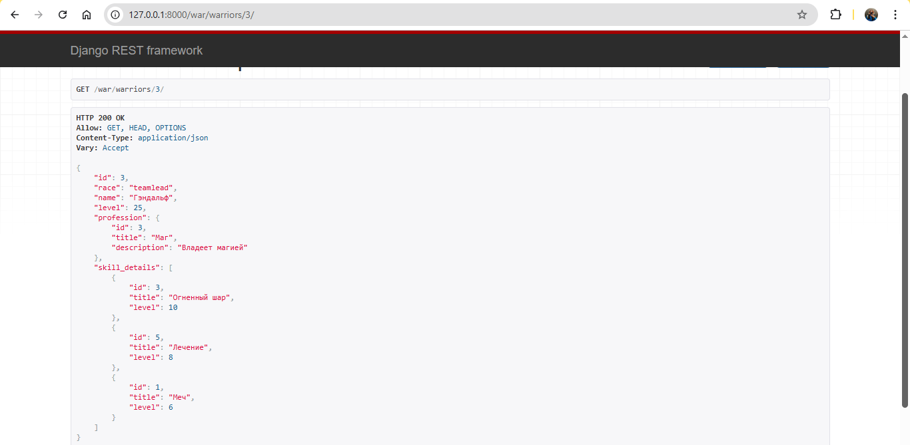

Практическое задание 3.2. Django rest framework¶
Практическое задание:¶
Реализовать ендпоинты: - Вывод полной информации о всех войнах и их профессиях (в одном запросе). - Вывод полной информации о всех войнах и их скилах (в одном запросе). - Вывод полной информации о войне (по id), его профессиях и скилах. - Удаление война по id. - Редактирование информации о войне.
Решение¶
Я создала приложение по методичке и добавила тестовые данные (создала несколько воинов, чтобы протестировать эндпоинты).
Вот, например, эндпоинт с отображением полной информации о воине:
Код приложения здесь: warriors_app
Код создания воинов здесь: pr2.py
Пример работы¶
